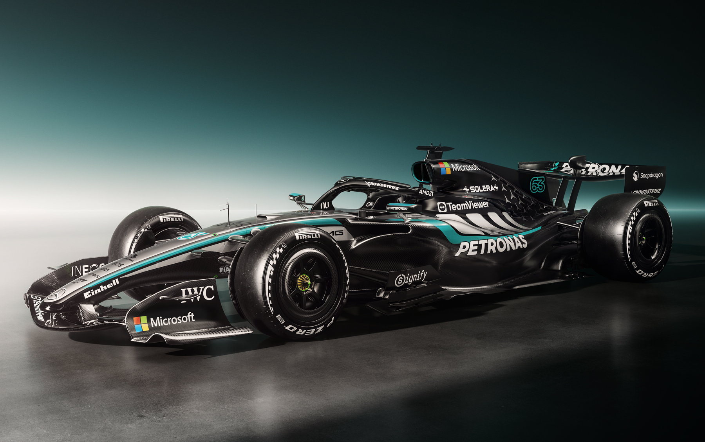

Mercedes
Historia
Mercedes-AMG Petronas es uno de los equipos más exitosos de la historia moderna de la Fórmula 1. La escudería consiguió una extraordinaria etapa de dominio entre 2014 y 2021, ganando ocho campeonatos de constructores consecutivos. Durante esa época Lewis Hamilton consiguió seis de sus siete títulos mundiales con Mercedes.
Alineación actual
George Russell
Piloto titular
Kimi Antonelli
Piloto titular
Principales logros
| Campeonatos de pilotos | 9 |
|---|---|
| Campeonatos de constructores | 8 |
| Victorias | 133 |
| Poles | 147 |